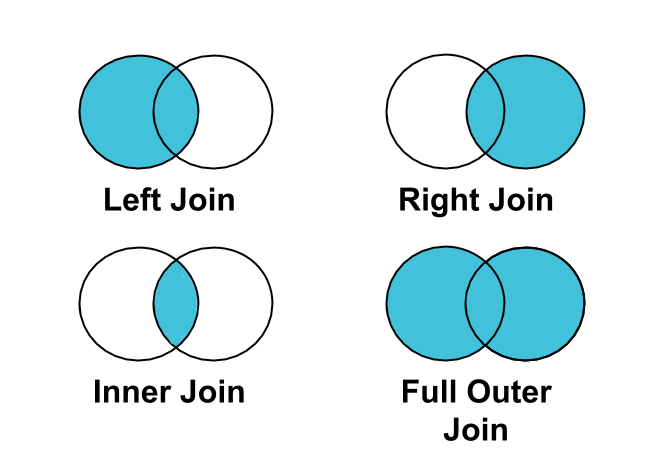

One to many Relationship
One to one Relationship

Many to many Relationship
Window functions တွေဟာ some variations of SQL တွေမှာ available ဖြစ်တဲ့ powerful feature တစ်ခုဖြစ်ပါတယ်။ သူတို့ဟာဆိုရင် entire result set တစ်ခုရဲ့ context ထဲမှာရှိတဲ့ row တစ်ခုကို analyze လုပ်ဖို့ ခွင့်ပြုပါတယ်။ နောက် row တစ်ခုကို other rows တွေနဲ့ query တစ်ခုထဲမှာ compare လုပ်နိုင်ပါတယ်။ နောက် window functions တွေကို query တစ်ခုထဲမှာရှိတဲ့ multiple levels ပေါ်မှာ aggregate လုပ်ဖို့ရန်အတွက် အသုံးပြုနိုင်ပါတယ်။ အဲ့ဒါကတော့ function call တစ်ခုကို အသုံးပြုတာပဲဖြစ်ပါတယ်။ SQL Server, Oracle, PostgreSQL and similar database systems တွေဖြစ်တဲ့ Amazon Redshift and Snowflake တို့အားလုံးဟာ window functions တွေကို support လုပ်ပေးပါတယ်။
Query တစ်ခုထဲမှာ sum, count, or average တို့လို aggregate functions တွေကို အသုံးပြုတဲ့အခါမှာ သူတို့ရဲ့ row နဲ့ associated ဖြစ်နေတဲ့ records တွေကို အသုံးပြုပြီးတော့ result တစ်ခုကို calculate လုပ်ရမှာဖြစ်ပါတယ်။ သူတို့ဟာဆိုရင် သူတို့ grouping ရဲ့ outside မှာရှိတဲ့ any records ရဲ့ values တွေကိုတော့ access မလုပ်နိုင်ပါဘူး။ ကျွန်တော်တို့ဟာ "OVER" keyword ကို အသုံးပြုပြီးတော့ aggregate functionsတွေဟာ query ရဲ့ results အားလုံးကို access လုပ်နိုင်အောင် Window ကို open လုပ်နိုင်ပါတယ်။ ဒါဟာဆိုရင် regular aggregate function တစ်ခုကို Window function တစ်ခုဆီကို transforms လုပ်တာပဲဖြစ်ပါတယ်။ "OVER" keyword ဟာဆိုရင် rows အားလုံးကို access လုပ်ပေးပါတယ်။ သူ့ရဲ့နောက်မှာ space တစ်ခုကို create လုပ်ဖို့ရန်အတွက် parentheses ကို ထည့်ပေးရပါမယ်။
Parition clause တစ်ခုဟာဆိုရင် "OVER" clause ထဲက parentheses ထဲမှာ provide လုပ်ထားတဲ့ conditions တွေအရ result ကို categories အဖြစ်နဲ့ divides လုပ်ပေးတာဖြစ်ပါတယ်။ ဒီလို groupings တွေကိုဟာ data ရဲ့ window ထဲမှာရှိတဲ့ panes တွေနဲ့တူပါတယ်။ Row တစ်ခုချင်းစီမှာရှိတဲ့ window functions တွေဟာ rows pane ကို access လုပ်ကြပါတယ်။ Partition clause တစ်ခုကို စတင်ဖို့ရန်အတွက် "PARTITION BY" နဲ့ စပေးရမှာဖြစ်ပါတယ်။ အဲ့နောက်မှာ conditions တွေကို put လုပ်နိုင်ပါတယ်။ အဲ့ဒါကတော့ panes တွေကနေ window ကို separate လုပ်တဲ့နေရာမှာ အသုံးပြုတဲ့ function ပဲဖြစ်ပါတယ်။
Some functions တွေဟာ window functions မှာပဲ available ဖြစ်တာဖြစ်ပြီးတော့ သူတို့ဟာ regular aggregates တော့မဟုတ်ပါဘူး။ ဒါဟာဘာကြောင့်လဲဆိုတော့ context other records ထဲမှာ useful ဖြစ်တဲ့အတွက်ကြောင့်ပဲဖြစ်ပါတယ်။ အခု section မှာတော့ window ထဲမှာ row တစ်ခုချင်းစီရဲ့ ranking ကိုပေးတဲ့ "Rank" ကို လေ့လာသွားမှာဖြစ်ပါတယ်။ Window specific functions တွေဟာ rows တွေကို တစ် row ပြီး တစ် row လာအောင် order partition ထဲမှာ row ကို order လုပ်ပေးတာဖြစ်ပါတယ်။
Window functions ရဲ့ power ကို frame clause တစ်ခုကို specifying လုပ်ပြီးတော့ enhance လုပ်နိုင်ပါသေးတယ်။ Frame clause ဟာ appropriately named တစ်ခုဖြစ်ပါတယ်။ ဘာကြောင့်လဲဆိုတော့ size of the window or အဲ့ window function ကနေ operates လုပ်ပေးလိုက်တဲ့ number of rows ကို determines လုပ်ပေးတဲ့အတွက်ကြောင့်ပဲဖြစ်ပါတယ်။ Frame clause ဟာ subset of rows တစ်ခုဆီကို focus လုပ်ဖို့ရန်အတွက် allow လုပ်ပေးပါတယ်။ Frame clause တစ်ခုဟာ "order by clause" ရဲ့နောက်က comes လုပ်ပါတယ်။ ကျွန်တော်တု့ိဆီမှာ frame clause တစ်ခုရှိတိုင်းမှာ ordering clause တစ်ခုရှိရပါမယ်။ Frame clause ဟာဆိုရင် window on ကို start လုပ်ဖို့အတွက် ဘယ် row ပါဆိုပြီးတော့ function ကို tells လုပ်ပေးတာဖြစ်ပါတယ်။ နောက် ဘယ်နေရမှာ end လုပ်ပါတယ်ဆိုတာကိုလည်း tells လုပ်ပါတယ်။ Frame clause ရဲ့ syntax ဟာ frames start and frame end ကြားထဲမှာရှိရပါမယ်။ Frame start and frame end အတွက် options 3 ခုရှိပါတယ်။ Current row ကို specify လုပ်နိုင်တယ်၊ ပြီးတော့ rows preceding and row following တို့ပဲဖြစ်ပါတယ်။ Current row ဆိုတာကတော့ query ရဲ့ row ပေါ်မှာ result ဟာ appear ဖြစ်လာတာကို refer လုပ်ပါတယ်။ Row preceding ဆိုတာကတော့ current row မတိုင်ခင်မှာလာပါတယ်။ Row following ကတော့ အဲ့ဒါရဲ့နောက်မှာ လာပါတယ်။ Frame clause ကို create လုပ်တဲ့အခါမှာ ROWS keyword ကိုအသုံးပြုပေးရမှာဖြစ်ပါတယ်။ Frame ကို စဖို့ရန်အတွက် "UNBOUNDED PRECEDING" နဲ့စပေးရမှာဖြစ်ပါတယ်။ Frame end ကတော့ "CURRENT ROW" ပဲဖြစ်ပါတယ်။
MAX(PLAYER_RANDING) OVER(ORDER BY SUM(CHECKMATE) ROWS BETWEEN UNBOUNDED PRECEDING AND CURRENT ROW) AS MAX_RANKING_ROWS
Knowledge ဟာ power ဖြစ်ပြီးတော့ databases တွေဟာ အဲ့ knowledge ရဲ့ foundation ပဲဖြစ်ပါတယ်။ Real world မှာဆိုရင် databases ဟာဆိုရင် very large ဖြစ်ပါတယ်။ အဲ့မှာဆိုရင် single table တစ်ခုထဲမှာ millions of rows တွေရှိပါတယ်။ ဒီ databases တွေကို relational databases လို့ခေါ်ပါတယ်။ ဒါဟာဆိုရင် structuring databases တစ်ခုဟာ attributes တွေကို shared လုပ်ခြင်းဖြင့် tables တွေဟာ တစ်ခုနဲ့တစ်ခု linked လုပ်တာကနေ လာပါတယ်။ အဲ့ links တွေဟာ tables တွေကြားမှာရှိတဲ့ relationships တွေပဲဖြစ်ပါတယ်။ Relational databases ဟာ application data storage အတွက် ဘာကြောင့်လ standard ဖြစ်လာတာလဲဆိုတာရဲ့ reasons တွေအများကြီးရှိပါတယ်။ Eliminating redundant data တွေဟာ disk ပေါ်မှာ storage requirements ကို reduces လုပ်ပေးပါတယ်။ Well structured and properly segmented ဖြစ်ပြီးတော့ data တွေကို accessed လုပ်နိုင်ပြီးတော့ မြန်မြန် modified လုပ်နိုင်ပါတယ်။ Bad data တွေဟာ bad reports ဆီကို leads လုပ်ပါတယ်။ Relational databases တွေဟာဆိုရင် schema designers တွေကို better data quality and better reports ဆီကို lead လုပ်တဲ့ good data principles တွေကို enforce လုပ်ဖို့ရန်အတွက် allow လုပ်ပေးပါတယ်။ Relational databases ဟာ data တွေကို related tables တွေထဲကို organize လုပ်ပေးပါတယ်။ အခု section မှာတော့ relational databases အကြောင်း and complex SQL queries ကို writing လုပ်တာတွေ and relational data တွေကို အတူတူ joining လုပ်တာတွေကို လေ့လာသွားမှာဖြစ်ပါတယ်။ နောက် sections တွေမှာဆိုရင် relational databases ရဲ့ အလုပ်လုပ်တဲ့ concepts ကို လေ့လာသွားမှာဖြစ်ပါတယ်။
Relational database တစ်ခုကို designing လုပ်တာကို normalization လို့ခေါ်ပါတယ်။ Process of normalization ထဲမှာဆိုရင် database schema designer ဟာ data တွေဟာ သူတို့ရဲ့ business အတွက်ရေးကြီးတယ်ဆိုတာနဲ့ သူတို့ကို tables တွေထဲမှာ ဘယ်လို fit လုပ်အောင်လုပ်မယ်ဆိုတာကိုတွေးထားရမှာဖြစ်ပါတယ်။
Sales data ပါတဲ့ millions of rows တွေနဲ့ spreadsheet တစ်ခုမှာဆိုရင် rows တစ်ခုချင်းစီမှာဆိုရင် product name လို sort of description value တွေရှိပါတယ်။ အဲ့မှာဆိုရင် product names ရဲ့ text ဟာ over and over again store လုပ်နေနိုင်ပါတယ်။ ကျွန်တော်တို့ဟာ list of product names တွေကို distinct list and သူ့ကို main dataset ကနေပြီးတော့ separately store လုပ်လိုက်တဲ့အခါမှာ ကျွန်တော်တို့ဟာ disk ရဲ့ storage space required ကို reduce လုပ်နိုင်မှာဖြစ်ပါတယ်။ Example မှာဆိုရင် product name ကို over and over again store လုပ်နေမဲ့အစား products IDs တွေနဲ့ store လုပ်နိုင်ပါတယ်။ အဲ့ over and over again ဖြစ်နေတဲ့ columns တွေကို normalizing လုပ်တာဟာ reducing disk space usage ကို crucial ဖြစ်စေပါတယ်။ Normalization ဟာဆိုရင် requirement တစ်ခုဖြစ်ပါတယ်။ Poorly structured data နှင့် problem ကို update anomaly လို့ခေါ်ပါတယ်။ ဒါဟာဆိုရင် normalization အတွက် huge plus တစ်ခုဖြစ်ပါတယ်။ ဒါဟာဆိုရင် application တစ်ခုအတွက် table တစ်ခုထဲမှာ row တစ်ခုကို update လုပ်ဖို့ရန်အတွက် more efficient ဖြစ်ပါတယ်။
အခုဆိုရင် ကျွန်တော်တို့ဟာ relational databases တွေဟာ ဘာဖြစ်တယ်ဆိုတာကို နားလည်ပြီဖြစ်ပါတယ်။ နောက် ဘာကြောင့် သူတို့ကို way ထဲမှာ structure လုပ်တယ်ဆိုတာကိုလည်း နားလည်ပြီဖြစ်ပါတယ်။ အခု section မှာတော့ high level တစ်ခုဖြစ်တဲ့ data တွေအကြောင်းကို သွားကြည့်ရအောင်။ ကျွန်တော်တို့ဟာ database table တစ်ခုကို disk မှာ stored လုပ်ထားတဲ့ set of data တစ်ခုအနေနဲ့ think လုပ်နိုင်ပါတယ်။ ကျွန်တော်တို့ဟာ set ဆီကို data တွေကို add and remove လုပ်နိုင်ပြီးတော့ update လည်းလုပ်နိုင်ပါတယ်။ ကျွန်တော်တု့ိ table တစ်ခုကို query လုပ်လိုက်တဲ့အချိန်မှာ set တစ်ခုလုံး or data ရဲ့ subset ကို ရရှိပါတယ်။ အဲ့ဒါကို result set လို့ခေါ်ပါတယ်။ Set တစ်ခုဆိုတာ similar things တွေကို grouping လုပ်တာပဲဖြစ်ပါတယ်။ နောက် သူတို့ဟာ relational databases ထဲမှာ useful queries တွေကို performing လုပ်တဲ့ foundation ပဲဖြစ်ပါတယ်။ ကျွန်တော်တို့ဟာ sets တွေကို conceptually အရ graphs တွေအဖြစ် depicts လုပ်နိုင်ပါတယ်။ အဲ့ဒါကို Venn diagrams လို့ခေါ်ပါတယ်။ ဒီ graphs ဟာဆိုရင် ကျွန်တော်တို့ကို ဘယ် set ဟာ another set နဲ့ overlap ဖြစ်ရမယ် or ဘာကြောင့် set တစ်ခုကို other sets တွေကနေ distinct လုပ်ထားတယ်ဆိုတာကို ကူညီပေးပါတယ်။ Example အနေနဲ့ certain types of fruits တွေကို ကြိုက်တဲ့ people တွေကို group လုပ်ကြည့်ရအောင်။ ကျွန်တော်တို့ဟာ အဲ့ဒါကို Venn diagrams အဖြစ်နဲ့ depict လုပ်နိုင်ပါတယ်။ Example မှာဆိုရင် small sets နှစ်ခုရှိပါတယ်။ First, apples ကို ကြိုက်တဲ့ sets of people နဲ့ second, bananas ကိုကြိုက်တဲ့ sets of people တွေပဲဖြစ်ပါတယ်။ Apples ကိုကြိုက်တဲ့သူတွေကတော့ John, Stacy, Indria and Bob ဖြစ်ပါတယ်။ နောက် bananas ကိုကြိုက်တဲသူတွေကတော့ Indria, Bob and Dante တို့ပဲဖြစ်ပါတယ်။ အဲ့မှာဆိုရင် sets နှစ်ခုလုံးရဲ့ common element ဟာဆိုရင် Bob and Indria တို့ပဲဖြစ်ပါတယ်။ အဲ့လိုဖြစ်တဲ့ area ကို sets နှစ်ခုကြားမှာရှိတဲ့ "Intersection" လို့ခေါ်ပါတယ်။ အဲ့မှာဆိုရင် အဲ့နှစ်ခုလုံးရဲ့ entirety ကို "Union" လို့ခေါ်ပါတယ်။ အဲ့မှာဆိုရင် apples or bananas ကို ကြိုက်တဲ့သူတွေ အားလုံးကိုပါဝင်ပါတယ်။ နောက် ကျွန်တော်တု့ိဟာ fruit တစ်မျိုးထဲကို ကြိုက်တဲ့ သူကို find လုပ်ချငတယ်ဆိုရင် အဲ့ဒါကို "Except" လို့ခေါ်ပါတယ်။ ကျွန်တော်တို့ဟာ intersection, union or except တို့ကို perform လုပ်တာကို set operation လို့ခေါ်ပါတယ်။ Queries တွေကနေ tables and results တွေကို data sets လို့ခေါ်ပါတယ်။ ကျွန်တော်တို့ဟာ port တစ်ခုအတွက် or dynamic application တစ်ခုအတွက် query တစ်ခုကို write လုပ်တဲ့အခါမှာ datasets အလုပ်လုပ်ရမှာဖြစ်ပါတယ်။ နောက် set တစ်ခုဆိုတာ collection of similar things ပဲဖြစ်ပါတယ်။ Dataset ဆိုတာလည်း same column definitions တွေနှင့် collection of rows တွေထက်မပိုပါဘူး။ Table တစ်ခုဆိုတာ disk တစ်ခုပေါ်မှာ physically အရ stored လုပ်ထားတဲ့ data set တစ်ခုပဲဖြစ်ပါတယ်။ Normalization process ဟာဆိုရင် intersection ရဲ့ set operations တွေကို လုပ်ဆောင်တဲ့အခါမှာ databases ကို helps လုပ်ပေးပါတယ်။
Relational databases ကို relation လို့ခေါ်ပါတယ်။ ဘာလို့လဲဆိုတော့ tables တွေဟာ common attributes တွေနဲ့ connected လုပ်တဲ့အတွက်ကြောင်ံဖြစ်ပါတယ်။ Attributes တွေဆိုတာ data ရဲ့ rows တွေကို အတူတူ link လုပ်ပေးတဲ့ common data တွေနှင့် columns ပဲဖြစ်ပါတယ်။ အဲ့ special columns တွေကို keys လို့ခေါ်ပါတယ်။ Database keys တွေဟာ relating data အတွက်ပဲ အသုံးပြုတာမဟုတ်ပါဘူး။ အချို့ keys တွေဟာ row တစ်ခုချင်းစီကို another ကနေပြီးတော့ distinct ဖြစ်တာကို guarantee လုပ်ပေးပါတယ်။ Other keys တွေကတော့ particular column တစ်ခုထဲမှာ certain value တစ်ခုကို repeat မဖြစ်အောင် guarantee ပေးပါတယ်။ Common database keys 3 ခုရှိပါတယ်။ အဲ့ဒါတွေကတော့ unique keys, primary keys and foreign keys တု့ိပဲဖြစ်ပါတယ်။ အခု section မှာတော့ first key ဖြစ်တဲ့ unique key ကို လေ့လာသွားမှာဖြစ်ပါတယ်။ သူဟာဆိုရင် specifically အရ configured လုပ်ထားတဲ့ column တစ်ခုပဲဖြစ်ပါတယ်။ သူ့ထဲမှာရှိတဲ့ value တွေဟာ repeat ဖြစ်လို့မရပါဘူး။ နောက် သူတို့ဟာ null ဖြစ်နိုင်ပါတယ်။ နောက် table တစ်ခုမှာ multiple unique keys တွေရှိလို့ရပါတယ်။ unique columns ထဲမှာရှိတဲ့ values တွေကို new values နဲ့ change လုပ်နိုင်ပါတယ်။
Primary key တစ်ခုဟာ data တွေဟာ column တစ်ခုထဲမှာ unique ဖြစ်တယ်ဆိုတာကို guarantees ပေးပါတယ်။ သူဟာ unique key နဲ့ တူပါတယ်။ ဒါပေမဲ့ အဲ့မှာဆိုရင် several differences တွေလည်းရှိပါတယ်။ Unique keys တွေလိုပဲ primary keys တွေဟာ unique values တွေဖြစ်ပါတယ်။ ဒါပေမဲ့ primary key ဟာတော့ null value ကို allow မလုပ်ပါဘူး။ နောက် table တစ်ခုမှာ primary key တစ်ခုပဲရှိရပါတယ်။ နောက် ကျွန်တော်တို့ဟာ primary key ရဲ့ value ကို modify မလုပ်နိုင်ပါဘူး။ Primary key တစ်ခုဟာ numeric or integer data type တစ်ခုဖြစ်စရာလည်းမလိုပါဘူး။ သူတို့ဟာ auto incrementing number fields တွေအဖြစ် implemented လုပ်ထာားတာပါတယ်။ ဘာကြောင့်လဲဆိုတော့ သူတို့ကို database ထဲမှာ data ရဲ့ relating tables အတွက် primarily အရ အသုံးပြုတဲ့အတွက်ကြောင့်ပဲဖြစ်ပါတယ်။ Primary key မှာဆိုရင် any useful values တွေမရှိပါဘူး။ နောက် section မှာဆိုရင် primary keys and foreign keys ကို အသုံးပြုပြီးတော့ tables တွေကြားမှာ database creates and enforces relationship ကို လုပ်ရတယ်ဆိုတာကို လေ့လာသွားမှာဖြစ်ပါတယ်။
ကျွန်တော်တို့ဟာ unique keys and primary keys တွေအကြောင်းကို လေ့လာခဲ့ပြီးဖြစ်ပါတယ်။ သူတို့ဟာ identified လုပ်နိုင်တဲ့ table တစ်ခုထဲမှာ row တစ်ခုချင်းစီကို guarantee ပေးတာဖြစ်ပါတယ်။ အခု section မှာတော့ another important key တစ်ခုဖြစ်တဲ့ foreign keys အကြောင်းကို လေ့လာသွားမှာဖြစ်ပါတယ်။ ကျွန်တော်တို့ဟာ foreign key ကို pointer တစ်ခုနေနဲ့ think လုပ်နိုင်ပါတယ်။ Example အနေနဲ့ Sale table ထဲမှာရှိတဲ့ ProductID ဟာ Product table ထဲမှာရှိတဲ့ ProcductID ကို appointed လုပ်တာဖြစ်ပါတယ်။ Sale table ထဲမှာရှိတဲ့ ProductID ထဲက "1" ဟာ Product table ထဲမှာရှိတဲ့ ProductID column ဟာ foreign key ဖြစ်ပါတယ်။ Foreign key ကို create လုပ်တဲ့အနေရာမှာ facts နှစ်ခုရှိပါတယ်။ First, database designer တွေဟာ tables နှစ်ခုလုံးမှာ match လုပ်ဖို့ရန်အတွက် columns ရှိရပါမယ်။ နောက် database system ဟာ columns နှစ်ခုဟာ tables တွေကို created လုပ်တဲ့အခါမှာ additional instruction တွေမပါဘဲနဲ့ ဒီ columns နှစ်ခုဟာ related ဖြစ်နေတယ်ဆိုတာကို သိဖို့ရန်အတွက် smart enough မဖြစ်ပါဘူး။ အဲ့ instruction ကို Foreign Key Constraint လို့ခေါ်ပါတယ်။ ကျွန်တော်တို့ဟာ constraint တစ်ခုကို database ကို enforce လုပ်တဲ့ rule တစ်ခုအနေနဲ့ မြင်နိုင်ပါတယ်။ Database တစ်ခုဟာ table နှစ်ခုကြားမှာရှိတဲ့ foreign key constraint တစ်ခုကို enforce လုပ်ဖို့ရန်အတွက် instructed လုပ်လိုက်ပါတယ်။ အဲ့ဒါဟာ value မရှိတဲ့ foreign key တစ်ခုပါတဲ့ table ထဲကို value ကို added လုပ်ဖို့ရန်အတွက် allow မလုပ်ပါဘူး။ ကျွန်တော်တို့ရဲ့ data relationships ရဲ့ validity ကို ensure ဖြစ်တာကို "referential integrity" လို့ခေါ်ပါတယ်။ ဒါဟာဆိုရင် good relational database ရဲ့ most important aspects ထဲက တစ်ခုဖြစ်ပါတယ်။ Constraint မပါဘူးဆိုရင် database ဟာ primary key ထဲမှာရှိတာကို care လုပ်မှာဟုတ်ပါဘူး။
Previous stages မှာဆိုရင် high level concepts တွေဖြစ်တဲ့ database normalization and set theory အကြောင်းကို လေ့လာခဲ့ပြီးဖြစ်ပါတယ်။ နောက် database keys တွေနဲ့ သူတို့ကို database relationships တွေကို create လုပ်ဖို့ရန်အတွက်ဘယ်လို အသုံးပြုရတယ်ဆိုတာကို လေ့လာခဲ့ပြီးဖြစ်ပါတယ်။ အခု section မှာတော့ table relationships အကြောင်းကို လေ့လာသွားမှာဖြစ်ပါတယ်။ Tables တွေကြားမှာ relationships အမျိုးအစား 3 မျိုးရှိပါတယ်။ အဲ့ဒါတွေကတော့ one to one, one to many and many to many တို့ပဲဖြစ်ပါတယ်။ ဒီ types တွေဟာဆိုရင် rows ဘယ်လောက်များများဟာ သူတို့အချင်းချင်း related ဖြစ်တယ်ဆိုတာကို described လုပ်ပေးပါတယ်။ One to many relationships ဟာဆိုရင် most common types of relationships ပဲဖြစ်ပါတယ်။ အဲ့ဒါကို database design မှာ encounter လုပ်လို့ရပါတယ်။ ဆိုလိုတာကတော့ table တစ်ခုထဲမှာရှိတဲ့ one row ဟာ အခြား table မှာရှိတဲ့ many rows နဲ့ related ဖြစ်နိုင်တာပဲဖြစ်ပါတယ်။ ဒါပေမဲ့ vice versa တော့မဟုတ်ပါဘူး။ Many ဟာ direction တစ်ခုထဲမှာ happen ဖြစ်နိုင်ပါတယ်။ Next section မှာတော့ next types of relationship ကို လေ့လာသွားမှာဖြစ်ပါတယ်။
အခု section မှာတော့ another type of relationship တစ်ခုဖြစ်တဲ့ many to many ကို လေ့လာသွားမှာဖြစ်ပါတယ်။ Relationship types တွေကို either side of relationship မှာ rows တွေဘယ်လောက်များများ တစ်ခုနဲ့တစ်ခု related ဖြစ်နိုင်တယ်ဆိုတာကို မူတည်ပြီးတော့ named ပေးထားတာဖြစ်ပါတယ်။ အဲ့ဒါကြောင့် many to many relationship ဟာဆိုရင် first table ထဲမှာရှိတဲ့ one record ဟာ many records နဲ့ related ဖြစ်နိုင်ပြီးတော့ second table မှာရှိတဲ့ one record ဟာ first table ထဲမှာရှိတဲ့ many records နဲ့ related ဖြစ်နိုင်တာပဲဖြစ်ပါတယ်။ အဲ့မှာဆိုရင် problem တစ်ခုရှိပါတယ်။ ဘယ် table မှာ foreign key ကို add လုပ်မလဲဆိုတာပဲဖြစ်ပါတယ်။ Tables နှစ်ခုကြားမှာရှိတဲ့ many to many relationship ကို လုပ်ဆောင်ဖို့ရန်အတွက်ဆိုရင် third table တစ်ခုလိုအပ်ပါတယ်။ အဲ့ tables 3 ခုကြားထဲမှာဆိုရင် one to many relationships ကို အသုံးပြုပေးရမှာဖြစ်ပါတယ်။ အဲ့ third table ကို junction table or an associative entity လို့ခေါ်ပါတယ်။ Many to many relationship ဟာ relational database အားလုံးမှာတော့ ရှိတာမဟုတ်ပါဘူး။ သူဟာဆိုရင် junction table တစ်ခုနှင့် one to many relationships နှစ်ခုပဲဖြစ်ပါတယ်။ Next section မှာတော့ နောက်ဆုံး relationship type တစ်ခုဖြစ်တဲ့ one to one relationship ကိုလေ့လာသွားမှာဖြစ်ပါတယ်။
အခု section မှာတော့ one to one relationship ကြောင်းကို လေ့လာသွားမှာဖြစ်ပါတယ်။ Tables နှစ်ခုကြားမှာရှိတဲ့ one to one relationship ဟာဆိုရင် one table ရဲ့ one row ဟာ another table က one row နှင့်ပဲ relate ဖြစ်တယ်ဆိုတာပဲဖြစ်ပါတယ်။ လက်တွေ့မှာတော့ ဒီ type of relationship ကို ခနခနတော့ တွေ့ရမှာမဟုတ်ပါဘူး။ သူဟာဆိုရင် third party databases နဲ့ အလုပ်လုပ်တာပဲဖြစ်ပါတယ်။ ကျွန်တော်တို့ application ရဲ့ functionality ကို columns တွေကို adding လုပ်ခြင်းဖြင့် extend လုပ်နိုင်ပါတယ်။
ဒီ relationships တွေဟာ design process အတွင်းမှာ depicted ဖြစ်ကြပါတယ်။ Database architect တစ်ခုဟာ database တစ်ခု designing လုပ်တဲ့အချိန်မှာ tables တွေကြားမှာ relationships ကို model လုပ်ဖို့ရန်အတွက် special software ကို အသုံးပြုကြပါတယ်။ Design process အတွင်းမှာဆိုရင် model ဟာ tables တွေအကြောင်းကို entities တွေအနေနဲ့ ပြောပါတယ်။ Entities တွေဟာ physical database မှာ tables တွေဖြစ်လာပါတယ်။ Database designer တွေ create လုပ်တာကို entity relationship diagrams လို့ခေါ်ပါတယ်။ ဘာကြောင့်လဲဆိုတော့ သူတို့ဟာ way database tables ကို finished database မှာ တစ်ခုနှင့်တစ်ခု relate ဖြစ်အောင် models လုပ်ဖို့အတွက် intended လုပ်တဲ့အတွက်ကြောင့်ပဲဖြစ်ပါတယ်။ အဲ့ diagrams တွေကို crow's foot notation လို့ခေါ်ပါတယ်။ Example မှာဆိုရင် entity relationship diagrams တွေကို လေ့လာနိုင်ပါတယ်။
One to many Relationship
One to one Relationship
Many to many Relationship
Previous sections တွေမှာဆိုရင် database concepts တွေအကြောင်းကို လေ့လာခဲ့ကြတာဖြစ်ပါတယ်။ အဲ့ concepts တွေဟာဆိုရင် more powerful SQL queries ကို ဘယ်လို write လုပ်မယ်ဆိုတာရဲ့ foundation ကို lead လုပ်ပါတယ်။ အခု section မှာတော့ table တစ်ခုထက်ပိုတာတွေအတွက် related data တွေကို ဘယ်လို combine လုပ်ရမယ်ဆိုတာကိုလေ့လာသွားမှာဖြစ်ပါတယ်။ အဲ့မှာ ကျွန်တော်တို့အသုံးပြုရမှာကတော့ table join ပဲဖြစ်ပါတယ်။ Query တစ်ခုထဲမှာ join တစ်ခုကို အသုံးပြုခြင်းဟာ database ကို two different tables က data တွေကို one result set အဖြစ်ကို mesh လုပ်ဖို့ရန်အတွက် ပြောလိုက်တာဖြစ်ပါတယ်။ Common types of joins နှစ်မျိုးရှိပါတယ်။ အဲ့ဒါတွေကတော့ "inner join" and "outer join" တို့ပဲဖြစ်ပါတယ်။ သူတို့ရဲ့ details ကို လေ့လာသွားမှာဖြစ်ပါတယ်။ Join ထဲမှာဆိုရင် one to one, one to many and many to many relationships တွေကို အသုံးပြုနိုင်ပါတယ်။
အခု section မှာတော့ Inner join ကို လေ့လာသွားမှာဖြစ်ပါတယ်။ Inner join ဟာဆိုရင် SQL join ရဲ့ most common kind တစ်ခုပဲဖြစ်ပါတယ်။ Join တစ်ခုဆိုတာ tables နှစ်မှာရှိတဲ့ data တွေကို combine လုပ်ဖို့ရန်အတွက် database ကို instructs လုပ်လိုက်တဲ့ way a query တစ်ခုပဲဖြစ်ပါတယ်။ Tables နှစ်ခုကို join လုပ်တဲ့နေရာမှာဆိုရင် "INNER JOIN" ဆိုတဲ့ keyword ကို အသုံးပြုပေးရမှာဖြစ်ပါတယ်။ နောက်ကနေ ကျွန်တော်တို့ join လုပ်ချင်တဲ့ table name ကို followed လုပ်ပေးရမှာဖြစ်ပါတယ်။ နောက် ကျွန်တော်တို့ဟာ ဘယ် columns ပေါ်မှာ join လုပ်တယ်ဆိုတာကိုလည်း database ကို ပြောပြဖို့လိုပါတယ်။ သူ့ရဲ့နောက်မှာ "ON" keyword နှင့် ကျွန်တော်တို့ join ကိုလုပ်ဆောင်ချင်တဲ့ columns နှစ်လိုက်ပေးရမှာဖြစ်ပါတယ်။ Example coding ကို အောက်မှာလေ့လာနိုင်ပါတယ်။
SELECT <columns>
FORM <table1>
INNER JOIN <table2> ON <equality criteria>
INNER JOIN <table3> ON <equlity criteria>
WHERE <search criteria>
အခု section မှာတော့ OUTER JOIN ကို လေ့လာသွားမှာဖြစ်ပါတယ်။ INNER JOIN ဟာဆိုရင် tables နှစ်ခုလုံး matches ဖြစ်တဲ့ data တွေရှိတဲ့ rows ကို return ပြန်ပေးတာဖြစ်ပါတယ်။ OUTER JOIN ဟာလည်း tables နှစ်ခုက data တွေကို brings လုပ်တာဖြစ်ပါတယ်။ သူဟာဆိုရင် matches ဖြစ်တဲ့ data တွေကိုရှိတဲ့ results တွေကိုပဲ returning လုပ်တာမဟုတ်ဘဲနဲ့ match မဖြစ်တဲ့ data ရှိတဲ့ row ကိုလည်း return ပြန်ပေးတာဖြစ်ပါတယ်။ အဲ့မှာဆိုရင် OUTER JOIN 3 မျိုးရှိပါတယ်။ အဲ့ဒါတွေကတော့ "LEFT OUTER JOIN", "RIGHT OUTER JOIN" and "FULL OUTER JOIN" တို့ပဲဖြစ်ပါတယ်။ LEFT OUTER JOIN ဟာဆိုရင် left ဘက်မှာရှိတဲ့ table က data တွေအားလုံးကို returns ပြန်ပေးတာဖြစ်ပါတယ်။ RIGHT OUTER JOIN ဟာဆိုရင်လည်း right table ကနေ records တွေအားလုံးကို return ပြန်ပေးတာဖြစ်ပါတယ်။ နောက် FULL OUTER JOIN ကတော့ tables နှစ်ခုလုံးမှာရှိတဲ့ records တွေအားလုံးကို return ပြန်ပေးတာဖြစ်ပါတယ်။ Database အားလုံးကတော့ outer join 3 မျိုးလုံးကို support လုပ်ပေးမထာားပါဘူး။ Example code ကို အောက်မှာလေ့လာနိုင်ပါတယ်။
SELECT <columns>
FORM <table1>
LEFT OUTER JOIN <table2> ON <equality criteria>
LEFT OUTER JOIN <table3> ON <equlity criteria>
WHERE <search criteria>
Diagram

အခု section မှာတော့ set operations အကြောင်းကို လေ့လာသွားမှာဖြစ်ပါတယ်။ Set operations ဟာဆိုရင် separate tables or datasets ပေါ်မှာ different tasks တွေကို perform လုပ်ဖို့ရန်အတွက် allow လုပ်ပေးပါတယ်။ ကျွန်တော်တို့ ဒီ set operations တွေကို two or more datasets တွေကို တစ်ခုထဲကို combine လုပ်ဖို့ရန်အတွက် အသုံးပြုနိုင်ပါတယ်။ အဲ့မှာဆိုရင် set operations 4 ခုရှိပါတယ်။ အဲ့ဒါတွေကတော့ Union, Union All, Intersect and Except တို့ပဲဖြစ်ပါတယ်။ Union and Union All ဟာဆိုရင် multiple tables က data တွေကို one result set အဖြစ် combine လုပ်ပေးတာဖြစ်ပါတယ်။ Intersect ဟာ tables နှစ်ခုလုံးမှာ common ဖြစ်တဲ့ rows တွေရဲ့ values ကနေ result set တစ်ခုကို produces လုပ်ပေးတာဖြစ်ပါတယ်။ Except ဟာဆိုရင် first table ထဲမှာပဲရှိတဲ့rows ရဲ့ values တွေကနေ result set တစ်ခုကို produces လုပ်ပေးတာဖြစ်ပါတယ်။
First အနေနဲ့ union operator အကြောင်းကို လေ့လာသွားမှာဖြစ်ပါတယ်။ Union ဟာဆိုရင် tables နှစ်ခုလုံးက data တွေအားလုံးကို result set တစ်ခုအဖြစ်ကို combine လုပ်ပေးပါတယ်။ ဒါဟာဆိုရင် inner join နဲ့ တူသလိုလိုရှိပါတယ်။ ဒါပေမဲ့ key different တစ်ခုရှိပါတယ်။ အဲ့ဒါကတော့ inner join ဟာ data တွေကို merge လုပ်ဖို့ရန်အတွက် foreign key relationship ကို အသုံးပြုပါတယ်။ Union ဟာဆိုရင် foreign key relationship ကို အသုံးမပြုပါဘူး။ နောက် သူဟာ data တွေကို side by side place လုပ်တာမဟုတ်ပါဘူး။ Union operations တွေဟာ data တွေကို vertically အရ stacks လုပ်ပေးတာဖြစ်ပါတယ်။ ဘာကြောင့်လဲဆိုတော့ data တွေဟာဆိုရင် stacked ဖြစ်နေတဲ့အတွက်ကြောင့်ပဲဖြစ်ပါတယ်။ အဲ့မှာဆိုရင် columns နှစ်ခုလုံးမှာ same numbers ကို columns မရှိဘူးဆိုရင် error တက်မှာဖြစ်ပါတယ်။ နောက် ကျွန်တော်တို့ဟာ first query မှာ columns နှစ်ခုလုံးကို select လုပ်ပြီးတော့ second query မှာ first column ကိုပဲ select လုပ်မယ်ဆိုရင် error တွေ့ရမှာဖြစ်ပါတယ်။ Union statement ဟာဆိုရင် column specified ပေါ်မှာ အခြေခံပြီးတော့ distinct set တစ်ခုကို returns ပြန်ပေးတာဖြစ်ပါတယ်။ Example code ကို အောက်မှာလေ့လာနိုင်ပါတယ်။
<query 1> UNION <query 2>
WHERE <search criteria>
အခု section မှာတော့ union all ကို လေ့လာသွားမှာဖြစ်ပါတယ်။ သူဟာဆိုရင် union နဲ့ similar ဖြစ်ပါတယ်။ ဒါပေမဲ့ key different တစ်ခုရှိပါတယ်။ အဲ့ဒါကတော့ union all ဟာဆိုရင် data တွေဟာ duplicates ဖြစ်နေတယ်ဆိုရင်တောင်မှ returns ပြန်ပေးမှာဖြစ်ပါတယ်။ Example code ကို အောက်မှာလေ့လာနိုင်ပါတယ်။
<query 1> UNION ALL <query 2>
WHERE <search criteria>
အခု section မှာတော့ INTERSECT အကြောင်းကိုလေ့သွားမှာဖြစ်ပါတယ်။ သူဟာဆိုရင် union လို subsets နှစ်ခုလုံးကနေပြီးတော့ rows တွေအားလုံးကို bringing လုပ်တာမဟုတ်ပါဘူး။ Intersect ဟာဆိုရင် subsets နှစ်ခုလုံးမှာ ပါတဲ့ rows တွေကိုပဲ returns ပြန်ပေးတာဖြစ်ပါတယ်။
<query 1> INTERSECT <query 2>
WHERE <search criteria>
အခု section မှာတော့ နောက်ဆုံး operations တစ်ခုဖြစ်တဲ့ EXCEPT operation အကြောင်းကိုလေ့လာသွားမှာဖြစ်ပါတယ်။ သူဟာဆိုရင် tables နှစ်လုံးရဲ့ common rows ကလွဲပြီးတော့ ကျန်တဲ့ rows တွေအားလုံးကို returns ပြန်ပေးတာဖြစ်ပါတယ်။
<query 1> EXPECT <query 2>
WHERE <search criteria>
အခု section မှာတော့ subqueries အကြောင်းကို လေ့လာသွားမှာဖြစ်ပါတယ်။ Subquery ဆိုတာ another query နှင့် conjunction လုပ်တဲ့နေရာမှာ အသုံးပြုတဲ့ query တစ်ခုပဲဖြစ်ပါတယ်။ Usually အားဖြင့်တော့ purposes of defining အတွက် or main query ကနေ returned ပြန်ပေးလိုက်တဲ့ narrowing results of the data တွေအတွက် အသုံးပြုကြပါတယ်။ ဒီမှာဆိုရင် subquery ကို အသုံးပြုဖို့ရန် လိုအပ်တဲ့ couple of different reasons တွေရှိပါတယ်။ ကျွန်တော်တို့ဟာ subquery တစ်ခုကို ကျွန်တော်တို့ where clause တစ်ခုထဲမှာ values အားလုံးကို သိဖို့မလိုတဲ့အချိန်မှာ အသုံးပြုနိုင်ပါတယ်။ ဒါမှမဟုတ်ရင် ကျွန်တော်တို့ဟာ other data တွေနဲ့ join လုပ်နိုင်တဲ့ temporary view of data တစ်ခုကို create လုပ်ချင်တဲ့အခါမှာလည်း subquery ကို အသုံးပြုပေးရမှာဖြစ်ပါတယ်။ Example code မှာဆိုရင် second or lower query ဟာဆိုရင် parenthesis ထဲမှာရှိပြီးတော့ အဲ့မှာ ကျွန်တော်တို့ရဲ့ search ဟာဆိုရင်လည်း resides ဖြစ်တာကိုတွေ့ရပါတယ်။ အဲ့လိုနည်းနဲ့ subquery ကိုအသုံးပြုနိုင်ပါတယ်။
SELECT <Columns>
FORM <Table1>
WHERE Column1 IN (
SELECT Column1
FORM <Table2>
WHERE <Search Criteria>
);
အခု section မှာတော့ subquery ထဲမှာ IN keyword ကိုဘယ်လို အသုံးပြုရမယ်ဆိုတာကို လေ့လာသွားမှာဖြစ်ပါတယ်။ ကျွန်တော်တို့ဟာ IN keyword ကို list of things တစ်ခုကို enumerate လုပ်ဖို့ရန်အတွက် WHERE statement ထဲမှာ အသုံးပြုနိုင်ပါတယ်။ နောက် NOT IN keyword ကိုလည်း IN keyword လိုပဲအသုံးပြုနိုင်ပါတယ်။ NOT IN ကတော့ IN နဲ့ ပြောင်းပြန်ပဲဖြစ်ပါတယ်။ Example code ကို အောက်မှာလေ့လာနိုင်ပါတယ်။
SELECT <Columns>
FORM <Table1>
WHERE Column1 IN (
SELECT Column1
FORM <Table2>
WHERE <Search Criteria>
);
SELECT <Columns>
FORM <Table1>
WHERE Column1 NOT IN (
SELECT Column1
FORM <Table2>
WHERE <Search Criteria>
);
အခု section မှာတော့ another type of subquery တစ်ခုဖြစ်တဲ့ temporary table or derived table ကို လေ့လာသွားမှာဖြစ်ပါတယ်။ Most of the time, ကျွန်တော်တို့ဟာ derived table ကို query တစ်ခုထဲမှာ create လုပ်ကြပါတယ်။ ဘာကြောင့်လဲဆိုတော့ data တွေကို exact format ထဲမှာ stored လုပ်စရာမလိုတဲ့အတွက်ကြောင့်ပဲဖြစ်ပါတယ်။ ဒါဟာဆိုရင် lot of aggregation or reporting queries တွေကို လုပ်ဆောင်တဲ့အခါမှာ တွေ့ရပါတယ်။ Temporary table or derived table ကို create လုပ်ဖို့ရန်အတွက် second tables name ကို put လုပ်ပြီးတော့ subquery တစ်ခုကို write လုပ်ပေးရမှာဖြစ်ပါတယ်။ ကျွန်တော်တို့ဟာ subqueries ကို IN clause ထဲမှာ writing လုပ်တာနဲ့ မတူဘဲနဲ့ ကျွန်တော်တို့ကြိုက်သလောက် columns တွေကို add လုပ်နိုင်ပါတယ်။
SELECT<Columns>
FORM <Table>
<INNER | OUTER > JOIN
(SELECT <Columns> FROM <Table> WHERE <Search Criteria>) AS <Alias>
ON <Join Criteria>;
အခု section မှာတော့ queries ကို ဘယ်လို easier to read ဖြစ်အောင်လုပ်ဆောင်မယ်ဆိုတာကိုလေ့လာသွားမှာဖြစ်ပါတယ်။ အဲ့အတွက် ကျွန်တော်တို့ဟာ Common Table Expression လို့ခေါ်တဲ့ CTE ကိုအသုံးပြုရမှာဖြစ်ပါတယ်။ CTEs ဟာဆိုရင် learn လုပ်ဖို့ really simple ဖြစ်ပါတယ်။ Most popular databases တွေဟာ CTEs ကို support လုပ်ပေးကြပါတယ်။ Common table expression တစ်ခုဆိုတာ SQL query တစ်ခုထက်ပိုပါဘူး။ သူဟာ temporary result set တစ်ခုဖြစ်ပါတယ်။ CTE ကို complete query ရဲ့ အစမှာ simple syntax တစ်ခုကို အသုံးပြုပြီးတော့ place လုပ်ပေးရမှာဖြစ်ပါတယ်။ အဲ့မှာဆိုရင် "WITH" keyword နဲ့ begin လုပ်ပေးရမှာဖြစ်ပြီးတော့ name တစ်ခုနဲ့ followed လုပ်ပြီးတော့ keyword "AS" ပြီးတော့ "SELECT" statement ကို parenthesis ထဲမှာ ထည့်ပေးရမှာဖြစ်ပါတယ်။ CTE name ဟာ query ကနေ returned ပြန်ပေးလိုက်တဲ့ results အတွက် alias တစ်ခုနဲ့ အတူတူပဲဖြစ်ပါတယ်။ နောက် CTE name ကို table name တစ်ခုလိုပဲ queries ထဲမှာ အသုံးပြုနိုင်ပါတယ်။ CTEs ဟာဆိုရင် long and complex SQL queries တွေကို organizing လုပ်ဖို့ရန်အတွက် several key benefits တွေရှိပါတယ်။ First, ကျွန်တော်တု့ိရဲ့ code ဟာ CTEs ကို အသုံးပြုလိုက်တဲ့အခါမှာ more readable ဖြစ်လာပါတယ်။ CTEs ဟာဆိုရင် ကျွန်တော်တို့ကို queries ကို reusable modules အဖြစ် organize လုပ်တဲ့အခါမှာ ကူညီပေးပါတယ်။ အဲ့မှာဆိုရင် multiple CTEs တွေကို single query အဖြစ် combine လုပ်နိုင်ပါတယ်။ နောက်ဆုံးကတော့ queries တွေကို common table expressions အဖြစ် organizing လုပ်တာဟာ data analysis problems တွေကို ဘယ်လို think လုပ်ရမယ်ဆိုတာကို matches ဖြစ်စေပါတယ်။
--create CTEs using the WITH statement
WITH cte_name AS (
-- select query goes here
)
--use CTEs like a table
SELECT * FORM cte_name
Common table expressions ဟာဆိုရင် subqueries ကို refactor လုပ်ဖို့ရန်နဲ့ more readable SQL ကို create လုပ်ဖို့ရန်အတွက် အသုံးပြုကြပါတယ်။ Subquery တစ်ခုဆိုတာ inner query or nested query လို့ခေါ်ပါတယ်။ သူဟာ SELECT keyword ကို အသုံးပြုပြီးတော့ generated လုပ်ပေးလိုက်တဲ့ another result set ပဲဖြစ်ပါတယ်။ Subqueries ကို WHERE clause ထဲမှာ another query ကနေ information ပေါ်မှာ မူတည်ပြီးတော့ results တွေကို filter လုပ်ဖို့ရန်အတွက် အသုံးပြုနိုင်ပါတယ်။ ကျွန်တော်တို့ဟာ multiple CTE ကို လုပ်ဆောင်ချင်တဲ့အခါမှာ WITH keyword ကို တစ်ကြိမ်ပဲရေးပေးရမှာဖြစ်ပါတယ်။ သူတို့ကြားထဲမှာ comma နဲ့ separate လုပ်ပေးရမှာဖြစ်ပါတယ်။